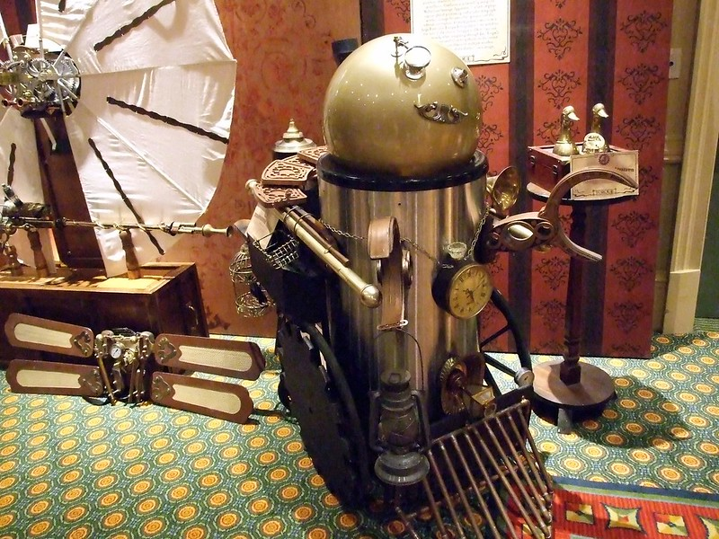
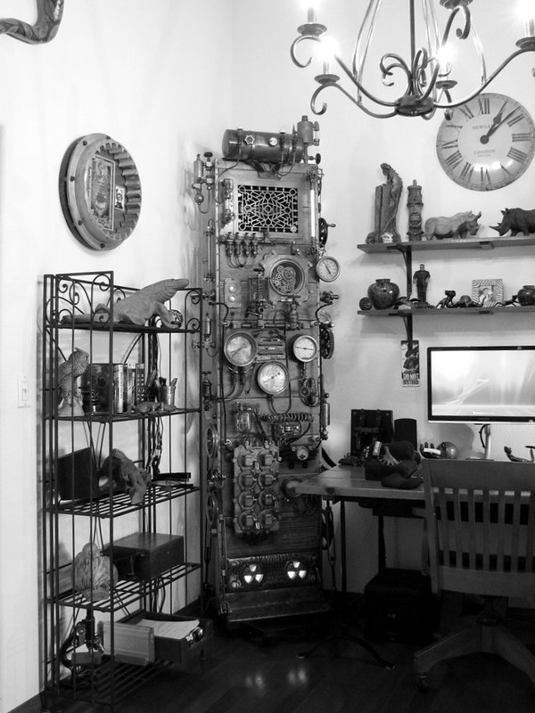

Hazel's Unusual Contraptions
For all your curiousities and twisted desires, visit Xanthar's known "curator" Hazel to quell such interests! Wish to know more about Hazel? Click ahead!


"Steampunk" by ViNull is licensed under CC BY 2.0
"SteamPunk Frankenstein Computer - By Dana Mattocks" by kissmyrobot@gmail.com is licensed under CC BY 2.0